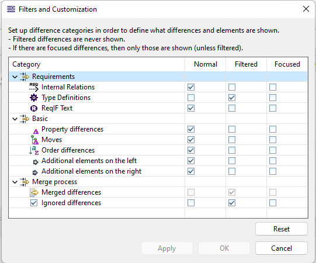

The default GUI is composed of 3 vertical sections and 2 horizontal sections.
Vertical sections
The middle section represents the contents of the initial model (before import) while the section on the right-hand side represents the contents of the resulting model (after import). When hovering on the top of any section, the complete path to the model is displayed as a tooltip if the window is too narrow. Each side is associated to a colour: by default, dark red for the left model and blue for the right model. This colour code is also used in other dialogs of the diff/merge tool in order to prevent any ambiguity.
The section on the left-hand side is the Synthesis section: it represents the differences between the models. According to the colour code, model elements which are present in the right model but not in the left model are written in blue, while they are written in dark red in the opposite case. Elements which are present in both sides but have differences in their attributes or references ("modified elements") are labeled in purple. The number of differences they contain (after filtering) is written between parentheses. The 3 sections are synchronized: clicking an element in the Synthesis section highlights it in the other sections and vice-versa.
Horizontal sections
The 2 horizontal sections correspond to 2 levels of detail. The top section focuses on model elements and only reflects that level of granularity. The bottom section is the Details section: it shows the contents (attributes and references) of the model element which is currently selected in the top section.
For example, if a modified element (in purple) is being clicked in the Synthesis section, then the Details section displays all the attributes and references of that element that have differences. The corresponding values are displayed in the middle and right parts of the Details section according to the model they belong to. These sub-sections are called the Value sections. For instance, in the snapshot above, element "N2" is selected in the Synthesis section; the Details section shows that it has a difference on its name: the name is "N2" in the left model and "N2-Container" in the right model as shown in the Value sections.
Iterative import
By default the following options are checked for the merge operation.

It's highly recommended to keep those options check if you have created requirements manually into your model. You may loose manually added requirements if you uncheck those options.
Filtering Capability
The scope of the data can be customized using the Difference Categories toolbar button, either by choosing to import (or not) the internal links between modules or the type definitions. See the "Requirements" part in the following screenshot:

See EMF DiffMerge documentation for more detailed information.